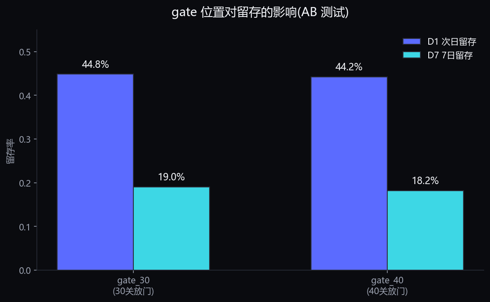
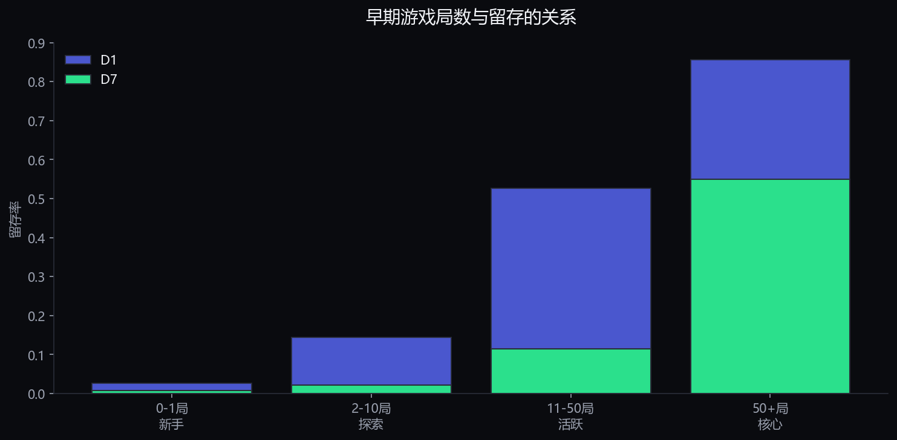

核心项目 · 纵向数据
基于真实移动游戏 AB 测试数据,回答"什么影响留存、如何识别流失风险"——可双向解读为玩家/用户生命周期。
业务问题:留存是运营的核心。本作品回答 3 个问题——整体留存如何?游戏设计改动(关卡门位置)是否影响留存?早期行为能否预示留存?
数据源:Cookie Cats 移动游戏的 真实 A/B 测试数据,90,189 名用户。含:
| 字段 | 含义 | 分析价值 |
|---|---|---|
| userid | 用户唯一 ID | 追踪个体 |
| version | gate_30 / gate_40 | AB 组(关卡门位置) |
| sum_gamerounds | 累计游玩局数 | 早期行为强度 |
| retention_1 | 次日是否回访 | D1 留存标签 |
| retention_7 | 7日是否回访 | D7 留存标签 |
本作品是作品集中唯一的纵向用户数据(真实 D1/D7 留存标签),补上其他项目缺失的"生命周期"证据链。
D1(次日)留存率 44.5%,D7(7日)留存率 18.6%。D7/D1 = 0.42,即次日回访用户中约 42% 能坚持到第 7 天。
留存曲线快速衰减是休闲游戏常态。运营的核心杠杆在 "次日回访"能否转化为"长期习惯"。
游戏设计了"门"(gate)——玩家玩到一定关卡后被要求等待/付费。本实验测试第 30 关放门 vs 第 40 关放门对留存的影响。

| 指标 | gate_30(30关放门) | gate_40(40关放门) | 显著性 |
|---|---|---|---|
| D1 次日留存 | 44.82% | 44.23% | p=0.076(不显著) |
| D7 7日留存 | 19.02% | 18.20% | p=0.0016(显著) |
D7 差异显著但效应量较小(+0.82pp)。结论方向可靠,实际放量前需综合付费、体验等更多指标。
按用户累计游玩局数分层,看留存差异——寻找"哪些早期行为值得运营干预"。

| 早期行为(累计局数) | 占比 | D1 | D7 | 解读 |
|---|---|---|---|---|
| 0-1 局(新手) | 10.6% | 2.7% | 0.7% | 流失最快,首日即走 |
| 2-10 局(探索) | 29.3% | 14.5% | 2.2% | 仍在流失高位 |
| 11-50 局(活跃) | 34.8% | 52.7% | 11.4% | 开始形成习惯 |
| 50+ 局(核心) | 25.3% | 85.6% | 55.0% | 高粘性用户 |
留存率(如 D7=55%)是分组后的统计事实;但"玩得多→留存高"是相关,因果方向需实验验证(可能留存好的用户本来就更爱玩)。
以上为运营方案设计与预设实验门槛,非真实线上实验结果。真实效果需上线后 A/B 验证。
| 视角 | 项目定位 | 核心概念 |
|---|---|---|
| 游戏运营 | 玩家生命周期与留存 | 关卡门设计影响留存 · 游戏局数行为 · AB 测试 |
| 通用运营 | 用户生命周期与留存 | 用户分层 · 次日/7日留存 · 行为驱动留存 · 实验验证 |
方法论可迁移:留存漏斗(D1/D7)、行为分层、AB 实验、流失风险识别——这套框架适用于任何有"用户回访"概念的产品。